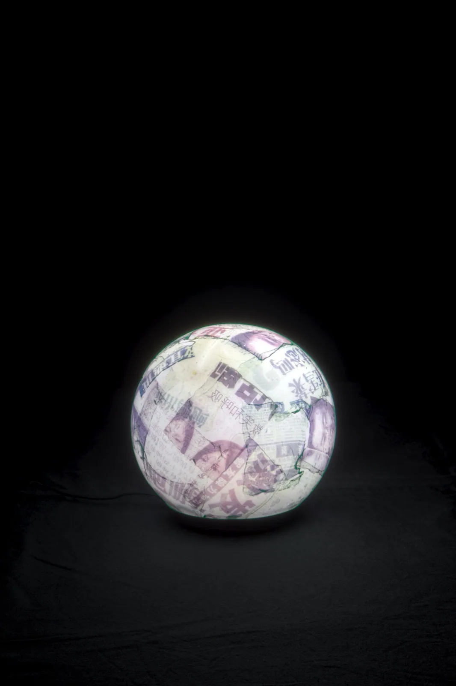
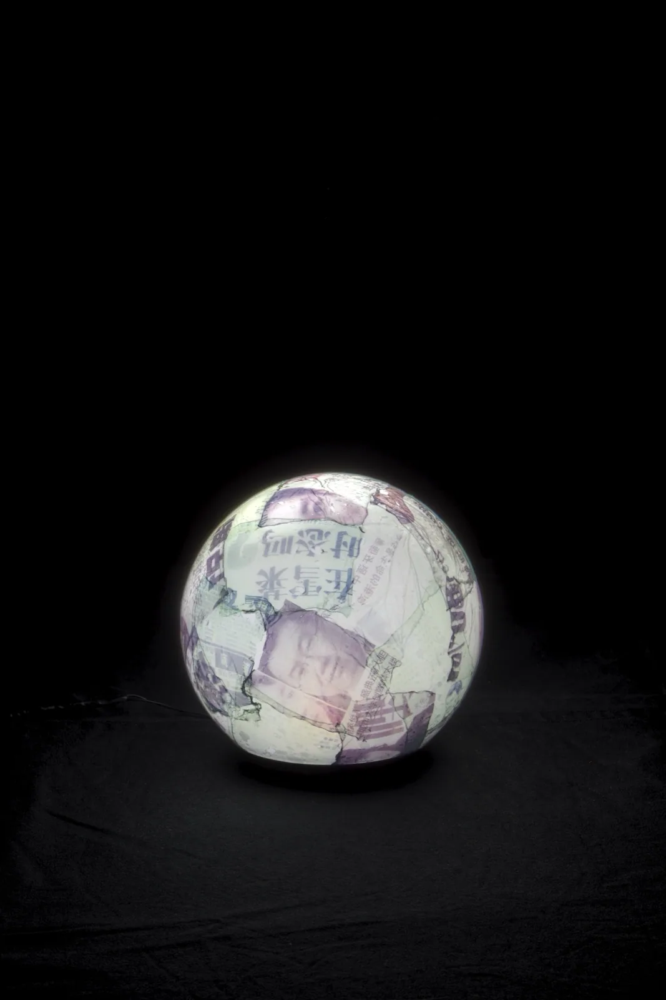
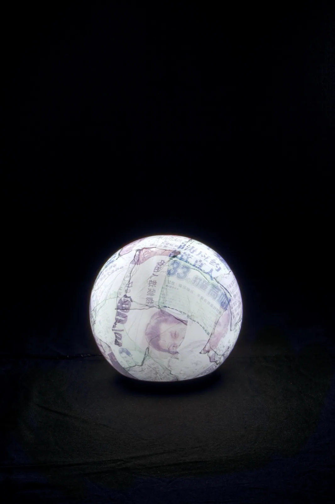
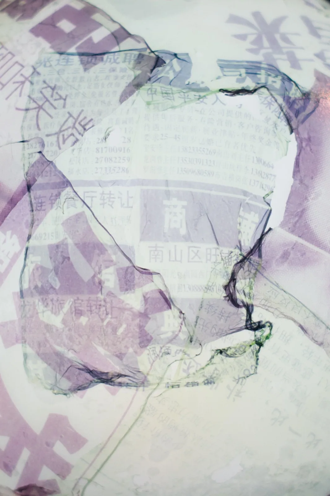
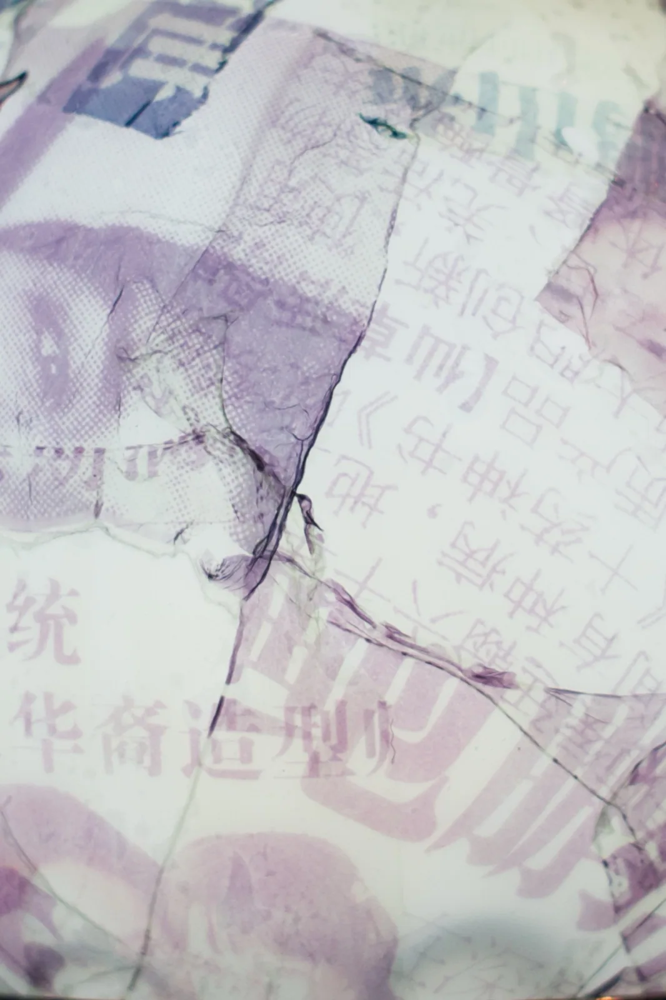
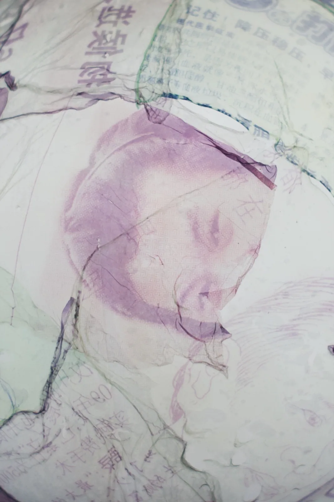

LuceLight
Emulsion Ball 2011
Emulsione Polaroid 669 trasferita su sfera opalina, LED alta potenza 1W
Emulsione Polaroid 669 trasferita su sfera opalina, LED alta potenza 1W
La pelle della fotografia staccata dal suo supporto e adagiata su una sfera di vetro opalino, accesa da un LED: l'emulsione diventa pianeta, la fotografia diventa scultura di luce.
The skin of a photograph lifted from its backing and laid over an opaline glass sphere, lit by a LED: the emulsion becomes a planet, photography becomes a light sculpture.





